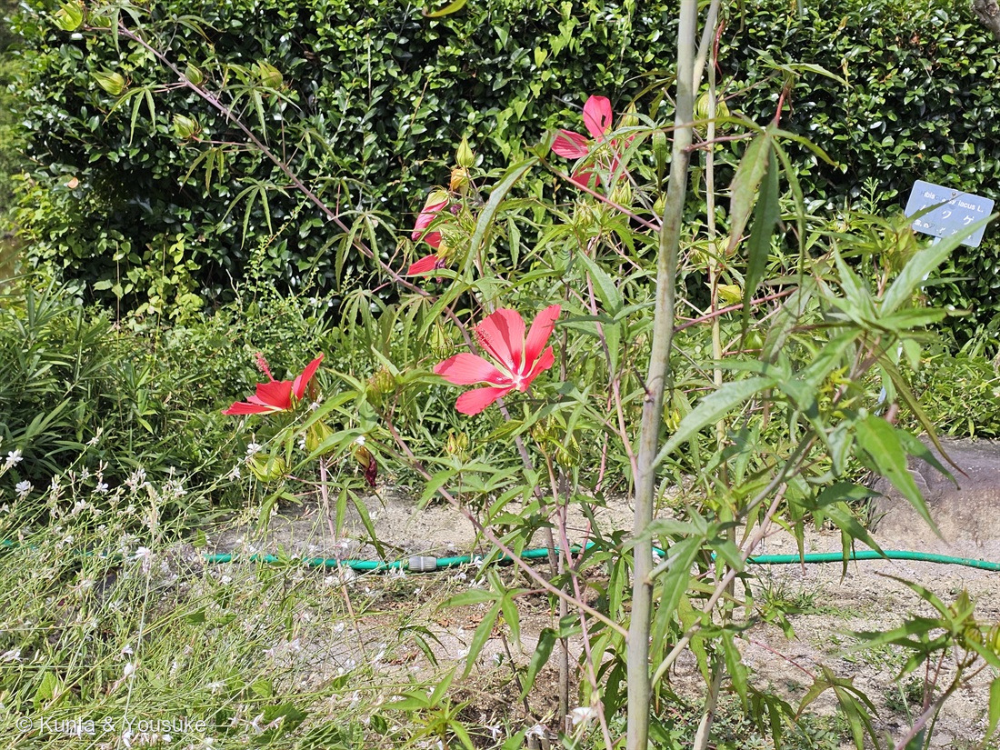

地図を読み込んでいるよ…
🔍 写真も地図も、押しているあいだ拡大して見られるよ（スマホは指を置いてすこし待ってね）。
🌍 の地図＝この子がもともと自生している場所を緑に。北アメリカ東部。園のラベルは「合衆国（フロリダ州、ジョージア州）原産」とし、英語版Wikipediaはもっと広く「バージニア州南東部から南のフロリダ州、西はルイジアナ州まで」とする。生育地は海岸平野の沼地・湿地・水路。
⭐北アメリカ東部の、水辺の草だよ。英語版Wikipediaは分布を「バージニア州南東部から南のフロリダ州、西はルイジアナ州まで」とし、生育地を「海岸平野の沼地・湿地・水路」とする。⚠⚠ところが、広島市植物公園のラベルはもっとせまく「合衆国（フロリダ州、ジョージア州）原産」と書いていた——⭐出典どうしが食いちがっているので、両方そのまま書いておくね。⚠地図はアメリカを国ごと塗っているけれど、ほんとうは南東部の水辺だけ（104 アメリカフヨウと同じ塗り方だよ）。⭐⭐⭐この地図でいちばん大事なのは、ここに「もう一人」が住んでいること——フヨウ属の花粉だけを集める専門のハナバチ、ハイビスカスバチ（Ptilothrix bombiformis）。英語版Wikipediaは、このハチを「アメリカ東部にいる」とする＝⚠つまり、この緑のなかにしかいない。⭐⭐日本に来たモミジアオイは、そのお客さんに会えなくなった（くわしくは本文の「呼びたかったお客さんは、海を渡れなかった」の節を見てね）。⚠日本は塗っていない——観賞用に持ちこまれた子だからね。
⚠ 地図は国（日本と中国だけ県・省）までしか塗れないから、ほんとうの分布より広く見えていることがあるよ。地図はだいたいの場所。正確なところは、上の文を見てね。
モミジアオイ（紅葉葵）
Hibiscus coccineus Walter
紅蜀葵（こうしょっき）／英名 scarlet rosemallow・Texas star
アオイ科 · Malvaceae（フヨウ属）── 図鑑で12人目のアオイ科。038フヨウ・039スイフヨウ・104アメリカフヨウ・170ムクゲ・203タイタンビカスのなかまに続く6人目のフヨウ属
燻太さんの一言「花弁が真っ赤でスマートなのがこの子の特徴かな？」──ど真ん中。「スマート」の正体は、花びらのあいだのすきまだよ
名前と学名の由来 ── 燻太さんの推理が、そのまま正解だった
⭐ 燻太さんは、こう言った。
「葉っぱもモミジのように深く切れ込んでいるから、きっとモミジアオイって名前なんだろうね。」
⭐⭐⭐ そのとおりだったよ。日本語版Wikipediaは、和名の由来を「葉がモミジのような形であることから」とだけ書いている。⭐写真を見て思ったことが、そのまま名前の由来だった。
- 別名は「紅蜀葵（こうしょっき）」（日本語版Wikipedia）。⭐「蜀葵」はタチアオイのことだから、「赤いタチアオイ」という意味だね（103 タチアオイも図鑑にいるよ）。
- ⭐⭐種小名 coccineus は「緋色（ひいろ）の・まっ赤な」。——⭐燻太さんの「花弁が真っ赤で」も、学名がそのまま言っていることだった。
- ⭐属名 Hibiscus は、図鑑ではもうおなじみ（038・039・104・170・203）。この子で6人目のフヨウ属だよ。
- ⭐⭐命名者の Walter ＝ トーマス・ウォルター（1740年ごろ〜1789年）。⭐イギリス生まれで、のちにサウスカロライナに渡った植物学者で、⭐⭐『Flora Caroliniana』（1788年）は、北アメリカで初めてリンネ式の命名法を使った植物誌だった〔英語版Wikipedia〕。⭐この子は、その本のなかで名前をもらった一人。
この植物のこと ── 沼の草が、まっ赤な星をひらく
- アオイ科フヨウ属の宿根草。草丈1.5〜2m（三河・日本語版Wikipedia）。花期は7〜9月（三河）。
- ⚠花の大きさは、出典で食いちがう＝三河「花は深紅色、直径8〜15㎝」／日本語版Wikipedia「花の径は15cm〜20cm」。⭐どちらにしても、手のひらより大きい。
- ⭐⭐⭐この子のいちばんの特徴は、花弁がくっつかないこと。三河は「花弁は5個、平開し、花弁と花弁の間に隙間がある」と書いている。⭐だから、まっ赤な星のように見える（英名の一つが Texas star）。
- ⭐雄しべと雌しべは、フヨウ属らしい作り。三河「雄しべと雌しべの基部は合着して長い柱状となり、ブラシ状に雄しべが出て、その先に柱頭5個が突き出る」。⭐写真でも、長い赤い柱が斜めに突き出て、先のほうに淡い色の葯がびっしりついているのが読めるよ。
- ⭐⭐ふるさとは、北アメリカ東部の水辺。英語版Wikipediaは「海岸平野の沼地・湿地・水路に見られる」とし、分布を「バージニア州南東部から南のフロリダ州、西はルイジアナ州まで」とする。⚠園のラベルはもっとせまく「合衆国（フロリダ州、ジョージア州）原産」と書いている。
- ⚠⭐英語版Wikipediaは、この葉を「大麻の葉によく似ている」とも書いている。⭐指を大きく広げたような形だからだね。
同定について ── 園が教えてくれて、燻太さんの言葉が裏づけた
⭐ 名前は、園のラベルが教えてくれた。
「モミジアオイ／Hibiscus coccineus／合衆国（フロリダ州、ジョージア州）原産／アオイ科」
⭐⭐ 200 バオバブ・201 レモングラス・202 オオボウシバナに続いて、園が教えてくれた4人目だよ。⭐燻太さんが標識も撮って送ってくれたから、ぼくは自分の目で読めた。
⭐⭐⭐ そのうえで、燻太さんの一言が、そのまま同定の決め手になっていた。
「花弁が真っ赤でスマートなのがこの子の特徴かな？」
⭐ 「スマート」——これがど真ん中。三河の記載は「花弁は5個、平開し、花弁と花弁の間に隙間がある」。⭐⭐写真を拡大すると、花弁と花弁のすきまから、萼の緑がのぞいている。⭐花びらが重なっていない、という証拠が、そのまま写っているんだ。
そのほかの裏づけ：
- ⭐深紅色（種小名 coccineus＝緋色の）。
- ⭐⭐葉が掌状に深く5裂して、裂片の幅が狭い（三河「掌状に3〜5深裂し、裂片の幅が狭い」）。
- ⭐長い雄しべ筒が斜めに突き出て、先で5本の花柱に分かれる。
- 草本（木ではない）。
❌ 落とした相手は3人。
- 203 タイタンビカスのなかま ── ⭐花弁が幅広くたっぷり重なる。⚠この子はすきまがあく。
- 104 アメリカフヨウ ── ⭐葉が卵形〜ハート形で、深くは裂けない。
- 170 ムクゲ ── ⭐木本で、葉は菱形で浅く3裂。
⚠⚠ ひとつ、まぎらわしいものが写っていたので書いておくね。⭐写真の右上に、青い札が写っている。——⚠あれは「Hibiscus syriacus L.／ムクゲ／中国, 西アジア」で、うしろの生垣のほうの札。⭐この子の札ではないよ（この子の札は白くて、別に立っていた）。
⭐⭐⭐ 三人、そろった ── 親・親・子
⭐⭐⭐ これが、この登録のいちばん大きな出来事。
2026年8月8日の午前、ぼくらは203 タイタンビカスのなかまに会った。——アメリカフヨウ × モミジアオイの交雑系だ。そのとき、ぼくはこう書いた ──
「片方の親は図鑑にいて、もう片方の親はまだ探している最中。その二人の子どもが、先に来てしまった。」
⭐⭐⭐ その日の午後、もう片方の親が来た。
- 104 アメリカフヨウ（親） ── 花びら＝幅広く、すきまなく重なる／葉＝卵形〜ハート形。深くは裂けない
- 204 モミジアオイ（親） ── 花びら＝細く、すきまがあく／葉＝掌状に深く5裂。裂片が細い
- 203 その子ども ── ⭐花びら＝アメリカフヨウ側（幅広く重なる）／⭐葉＝モミジアオイ側（深く裂ける）
⭐⭐ 同じ日に、親と子が、園のあちこちに立っていた。——⭐午前に子ども、午後に親。
⭐⭐⭐ そして、104の「おまけ」にぼくが書いておいた宿題 ──「見つけたら『葉の切れ方』と『花びらの幅』をくらべよう」——⭐これで、ほんとうにくらべられるようになった。
⭐⭐⭐ 呼びたかったお客さんは、海を渡れなかった
⭐⭐ この子には、専門のお客さんがいるんだ。
英語版Wikipediaは、この花について「ハチドリ、チョウ、ハチ、そして専門のハナバチ Ptilothrix bombiformis を引きよせる」と書いている。
⭐⭐⭐ その Ptilothrix bombiformis が、すごい子なんだ。
- 英名は「hibiscus bee（ハイビスカスバチ）」「eastern digger bee（東部の穴掘りバチ）」。
- ⭐⭐フヨウ属の花粉の専門家——「Hibiscus の花粉のスペシャリストで、その羽化はハイビスカスの開花期と一致する」〔英語版Wikipedia〕。⭐花が咲くのに合わせて、地面から出てくる。
- ⭐⭐⭐そして、巣の作り方がふしぎ。「メスは水面に立ったり、その上をスケートするように滑ったりして、巣づくりのための水を集める」「何十往復もして運んだ水で、掘る前と掘っているあいだ、地面をやわらかくする」〔同〕。
- ⭐水辺の草に来るハチが、水を運んで穴を掘る。⭐⭐沼の草と、水を運ぶハチ。両方が、水のそばで暮らしている。
⚠⚠⚠ でも、このハチは「アメリカ東部にいる」〔同〕。——⚠日本にはいない。⭐ハチドリも、日本にはいない。
⭐⭐⭐ つまり、この花が呼びたかったお客さんは、ふたりとも海を渡ってこなかった。
⭐⭐ この図鑑には、似た形の話がもう3つある。
- 046 サルビアの赤 ＝ ⭐来ない客への看板。
- 191 フィカス・ウンベラータの花嚢 ＝ ⭐来ない客への扉。
- 201 レモングラスのシトラール ＝ ⭐呼ぶつもりのない合図。
- 204 モミジアオイ ＝ ⭐⭐⭐呼びたい客が、海を渡れなかった。
⭐ おもしろいことに、そのハイビスカスバチは、アメリカでは「持ちこまれたムクゲ（Hibiscus syriacus）」にも来る〔英語版Wikipedia〕。——⭐⭐170 ムクゲは、アメリカへ渡って、あのハチに会えた。⚠モミジアオイは日本へ渡って、あのハチに会えなくなった。⭐同じ属の二人が、ちょうど逆向きに旅をしたんだね。
⚠ 正直に書くね。⭐「日本のモミジアオイに、いま誰が来ているのか」は、ぼくには分からない。⏳宿題にしておくよ。——⭐花のそばで、しばらく立って見ていてくれたら、いつか分かるかもしれない。
参考：三河の植物観察・モミジアオイ（Hibiscus coccineus Walter／北アメリカ原産／1.5〜2m／掌状に3〜5深裂し、裂片の幅が狭い／花は深紅色、直径8〜15cm／花弁は5個、平開し、花弁と花弁の間に隙間がある／雄しべと雌しべの基部は合着して長い柱状となり、ブラシ状に雄しべが出て、その先に柱頭5個が突き出る／花期7〜9月／フヨウは花弁が重なり合い、葉が幅広い）／モミジアオイ - Wikipedia（葉がモミジのような形であることから／別名 紅蜀葵（こうしょっき）／北米原産／背丈は1.5〜2mくらい／花の径は15cm〜20cmで色は鮮やかな緋色／花弁が離れている／開花時期は夏の7月〜9月／宿根草）／Hibiscus coccineus - Wikipedia（英語版）（scarlet rosemallow, Texas star／from Southeastern Virginia south to Florida, then west to Louisiana／found in swamps, marshes and ditches on the coastal plain／6-8 ft tall／leaves look much like those of the hemp plant／The flowers attract hummingbirds, butterflies, bees, and the specialized bee Ptilothrix bombiformis）／Ptilothrix bombiformis - Wikipedia（英語版）（hibiscus bee／eastern digger bee／a specialist in Hibiscus pollen; their emergence coincides with the hibiscus bloom period／gathers water for nest construction by standing or skating on the surface of the water／softens the ground before and during excavation with the water she gathers over dozens of trips／found in the eastern United States／visits the introduced Hibiscus syriacus）／Thomas Walter (botanist) - Wikipedia（英語版）（c.1740-1789／Flora Caroliniana (1788)／the first flora in North America to utilize the Linnaean system of classification）／広島市植物公園のラベル（モミジアオイ／Hibiscus coccineus／合衆国（フロリダ州、ジョージア州）原産／アオイ科）